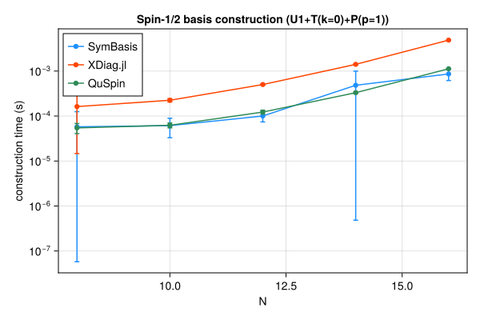
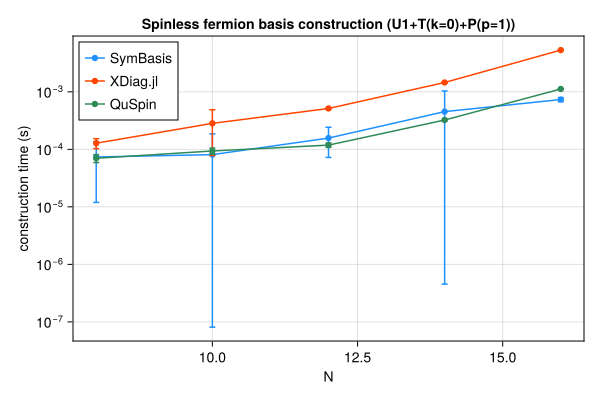
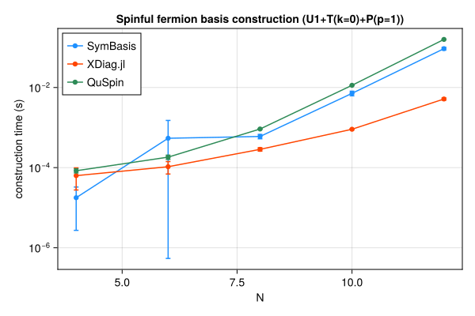
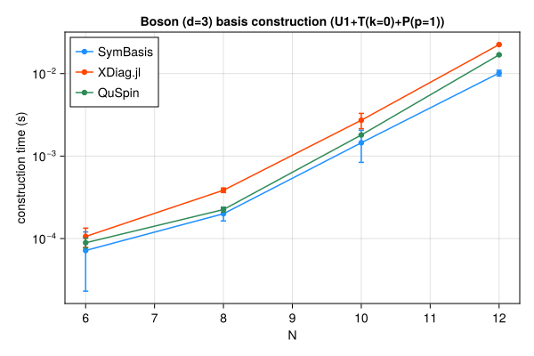

Symmetry-resolved basis construction and representative-state lookup speed, compared against XDiag.jl and QuSpin. SymBasis is benchmarked against its own dev checkout; XDiag.jl and QuSpin are whatever their latest released versions were at the time this page was generated. Regenerated automatically on every SymBasis release.
Threads are left at each library's own defaults (JULIA_NUM_THREADS=auto, OMP_NUM_THREADS unset) rather than pinned to 1 – these numbers reflect out-of-the-box performance, not a strictly single-threaded comparison.
Sweep: BENCH_SWEEP=quick
plot_construction("spin", "Spin-1/2")

| N | config | dim | SymBasis | XDiag | QuSpin | XDiag/SymBasis | QuSpin/SymBasis |
|---|
| 8 | U1 | 70 | 7.015e-06 ± 8.3e-06 s | 3.514e-06 ± 6.2e-06 s | 3.66e-05 ± 1.3e-05 s | 0.50x | 5.22x |
| 8 | U1+T(k=0) | 10 | 1.173e-05 ± 1.1e-05 s | 5.036e-05 ± 2.5e-05 s | 4.538e-05 ± 1.1e-05 s | 4.30x | 3.87x |
| 8 | U1+T(k=0)+P(p=1) | 8 | 5.772e-05 ± 6.8e-05 s | 0.0001625 ± 0.00015 s | 5.445e-05 ± 1.4e-05 s | 2.82x | 0.94x |
| 10 | U1 | 252 | 1.041e-05 ± 9.7e-06 s | 4.037e-06 ± 6.1e-06 s | 3.705e-05 ± 9.9e-06 s | 0.39x | 3.56x |
| 10 | U1+T(k=0) | 26 | 6.279e-05 ± 3.8e-05 s | 0.0001005 ± 2.3e-05 s | 5.175e-05 ± 8.3e-06 s | 1.60x | 0.82x |
| 10 | U1+T(k=0)+P(p=1) | 16 | 6.124e-05 ± 2.8e-05 s | 0.0002244 ± 1.9e-05 s | 6.234e-05 ± 7.7e-06 s | 3.67x | 1.02x |
| 12 | U1 | 924 | 2.614e-05 ± 1.8e-05 s | 4.343e-06 ± 6.2e-06 s | 4.271e-05 ± 7.3e-06 s | 0.17x | 1.63x |
| 12 | U1+T(k=0) | 80 | 7.749e-05 ± 2.4e-05 s | 0.0002796 ± 2.3e-05 s | 9.229e-05 ± 2.1e-05 s | 3.61x | 1.19x |
| 12 | U1+T(k=0)+P(p=1) | 50 | 0.0001003 ± 2.6e-05 s | 0.0005019 ± 1.4e-05 s | 0.0001227 ± 1.2e-05 s | 5.00x | 1.22x |
| 14 | U1 | 3432 | 0.0001235 ± 3.9e-05 s | 5.042e-06 ± 6.5e-06 s | 6.745e-05 ± 1e-05 s | 0.04x | 0.55x |
| 14 | U1+T(k=0) | 246 | 0.0002901 ± 0.00025 s | 0.0009787 ± 2.6e-05 s | 0.0002264 ± 1.7e-05 s | 3.37x | 0.78x |
| 14 | U1+T(k=0)+P(p=1) | 133 | 0.0004836 ± 0.00051 s | 0.00141 ± 4.5e-05 s | 0.0003309 ± 1.6e-05 s | 2.92x | 0.68x |
| 16 | U1 | 12870 | 0.000686 ± 0.00083 s | 6.393e-06 ± 7.3e-06 s | 0.000151 ± 1e-05 s | 0.01x | 0.22x |
| 16 | U1+T(k=0) | 810 | 0.0006397 ± 0.00047 s | 0.004377 ± 0.00089 s | 0.0007402 ± 1.1e-05 s | 6.84x | 1.16x |
| 16 | U1+T(k=0)+P(p=1) | 440 | 0.000863 ± 0.00025 s | 0.004879 ± 5.5e-05 s | 0.001124 ± 1.2e-05 s | 5.65x | 1.30x |
| N | config | nsamples | SymBasis | XDiag | QuSpin |
|---|
| 16 | U1+T(k=0)+P(p=1) | 10000 | 3.002e-07 ± 1.3e-09 s | N/A (no decoupled API) | 1.788e-07 ± 1.4e-09 s |
plot_construction("fermion", "Spinless fermion")

| N | config | dim | SymBasis | XDiag | QuSpin | XDiag/SymBasis | QuSpin/SymBasis |
|---|
| 8 | U1 | 70 | 6.727e-06 ± 7.1e-06 s | 3.635e-06 ± 6e-06 s | 4.857e-05 ± 1e-05 s | 0.54x | 7.22x |
| 8 | U1+T(k=0) | 9 | 1.183e-05 ± 1.1e-05 s | 0.0001415 ± 0.00031 s | 6.474e-05 ± 1.2e-05 s | 11.96x | 5.47x |
| 8 | U1+T(k=0)+P(p=1) | 6 | 7.371e-05 ± 6.2e-05 s | 0.0001281 ± 2.5e-05 s | 7.001e-05 ± 1.1e-05 s | 1.74x | 0.95x |
| 10 | U1 | 252 | 1.045e-05 ± 1e-05 s | 4.073e-06 ± 6e-06 s | 4.913e-05 ± 7.5e-06 s | 0.39x | 4.70x |
| 10 | U1+T(k=0) | 26 | 4.403e-05 ± 2.8e-05 s | 0.000113 ± 2.4e-05 s | 7.568e-05 ± 8.6e-06 s | 2.57x | 1.72x |
| 10 | U1+T(k=0)+P(p=1) | 16 | 8.099e-05 ± 0.0001 s | 0.0002835 ± 0.00021 s | 9.376e-05 ± 1.1e-05 s | 3.50x | 1.16x |
| 12 | U1 | 924 | 2.928e-05 ± 3.3e-05 s | 4.041e-06 ± 5.7e-06 s | 6.296e-05 ± 1e-05 s | 0.14x | 2.15x |
| 12 | U1+T(k=0) | 76 | 9.453e-05 ± 5e-05 s | 0.0003051 ± 2.2e-05 s | 0.0001168 ± 2.9e-05 s | 3.23x | 1.24x |
| 12 | U1+T(k=0)+P(p=1) | 33 | 0.0001573 ± 8.5e-05 s | 0.0005145 ± 1.9e-05 s | 0.0001186 ± 1e-05 s | 3.27x | 0.75x |
| 14 | U1 | 3432 | 7.149e-05 ± 2.3e-05 s | 5.897e-06 ± 7.1e-06 s | 6.686e-05 ± 9.7e-06 s | 0.08x | 0.94x |
| 14 | U1+T(k=0) | 246 | 0.0005375 ± 0.00088 s | 0.001121 ± 2e-05 s | 0.0002289 ± 1.9e-05 s | 2.09x | 0.43x |
| 14 | U1+T(k=0)+P(p=1) | 113 | 0.0004533 ± 0.00058 s | 0.001457 ± 4e-05 s | 0.0003241 ± 1.5e-05 s | 3.21x | 0.72x |
| 16 | U1 | 12870 | 0.0002692 ± 5.3e-05 s | 6.707e-06 ± 8e-06 s | 0.0001507 ± 1.2e-05 s | 0.02x | 0.56x |
| 16 | U1+T(k=0) | 809 | 0.0005308 ± 6.3e-05 s | 0.004412 ± 6.4e-05 s | 0.0007363 ± 1.1e-05 s | 8.31x | 1.39x |
| 16 | U1+T(k=0)+P(p=1) | 422 | 0.0007359 ± 6e-05 s | 0.005326 ± 4.9e-05 s | 0.001123 ± 1e-05 s | 7.24x | 1.53x |
| N | config | nsamples | SymBasis | XDiag | QuSpin |
|---|
| 16 | U1+T(k=0)+P(p=1) | 10000 | 3.827e-07 ± 4.2e-09 s | N/A (no decoupled API) | 1.926e-06 ± 1.8e-07 s |
plot_construction("spinful_fermion", "Spinful fermion")

| N | config | dim | SymBasis | XDiag | QuSpin | XDiag/SymBasis | QuSpin/SymBasis |
|---|
| 4 | U1 | 36 | 1.112e-05 ± 1.8e-05 s | 4.855e-06 ± 7.5e-06 s | 5.852e-05 ± 1.2e-05 s | 0.44x | 5.26x |
| 4 | U1+T(k=0) | 10 | 1.163e-05 ± 1.2e-05 s | 4.497e-05 ± 6.5e-05 s | 7.368e-05 ± 1.3e-05 s | 3.87x | 6.33x |
| 4 | U1+T(k=0)+P(p=1) | 6 | 1.777e-05 ± 1.5e-05 s | 6.32e-05 ± 3.6e-05 s | 8.374e-05 ± 9.9e-06 s | 3.56x | 4.71x |
| 6 | U1 | 400 | 1.954e-05 ± 1.2e-05 s | 4.769e-06 ± 7.7e-06 s | 7.191e-05 ± 1.1e-05 s | 0.24x | 3.68x |
| 6 | U1+T(k=0) | 68 | 0.0004595 ± 0.0009 s | 6.138e-05 ± 6.4e-05 s | 0.0001297 ± 1.6e-05 s | 0.13x | 0.28x |
| 6 | U1+T(k=0)+P(p=1) | 38 | 0.0005413 ± 0.00097 s | 0.0001055 ± 3.6e-05 s | 0.0001829 ± 2.2e-05 s | 0.19x | 0.34x |
| 8 | U1 | 4900 | 0.0004902 ± 0.00038 s | 5.273e-06 ± 8.5e-06 s | 0.0001279 ± 1.5e-05 s | 0.01x | 0.26x |
| 8 | U1+T(k=0) | 618 | 0.0003967 ± 5e-05 s | 0.0001186 ± 2.9e-05 s | 0.0005272 ± 1.6e-05 s | 0.30x | 1.33x |
| 8 | U1+T(k=0)+P(p=1) | 318 | 0.0006 ± 7.5e-05 s | 0.0002861 ± 2.8e-05 s | 0.0009217 ± 1.2e-05 s | 0.48x | 1.54x |
| 10 | U1 | 63504 | 0.003072 ± 0.00072 s | 5.525e-06 ± 8.5e-06 s | 0.001064 ± 2.3e-05 s | 0.00x | 0.35x |
| 10 | U1+T(k=0) | 6352 | 0.004952 ± 0.0013 s | 0.0003923 ± 2.9e-05 s | 0.006432 ± 1.8e-05 s | 0.08x | 1.30x |
| 10 | U1+T(k=0)+P(p=1) | 3212 | 0.007147 ± 0.00094 s | 0.0009083 ± 3e-05 s | 0.01136 ± 4.2e-05 s | 0.13x | 1.59x |
| 12 | U1 | 853776 | 0.02464 ± 0.0075 s | 5.892e-06 ± 7.6e-06 s | 0.01532 ± 5.4e-05 s | 0.00x | 0.62x |
| 12 | U1+T(k=0) | 71188 | 0.05648 ± 0.0065 s | 0.002029 ± 5.2e-05 s | 0.0897 ± 0.00012 s | 0.04x | 1.59x |
| 12 | U1+T(k=0)+P(p=1) | 35694 | 0.09337 ± 0.0077 s | 0.00517 ± 0.00033 s | 0.1587 ± 0.00022 s | 0.06x | 1.70x |
| N | config | nsamples | SymBasis | XDiag | QuSpin |
|---|
| 12 | U1+T(k=0)+P(p=1) | 10000 | 1.372e-06 ± 2.6e-09 s | N/A (no decoupled API) | 2.236e-06 ± 4e-08 s |
plot_construction("boson", "Boson (d=3)")

| N | config | dim | SymBasis | XDiag | QuSpin | XDiag/SymBasis | QuSpin/SymBasis |
|---|
| 6 | U1 | 141 | 1.143e-05 ± 9.7e-06 s | 4.301e-06 ± 5.8e-06 s | 5.651e-05 ± 1.2e-05 s | 0.38x | 4.95x |
| 6 | U1+T(k=0) | 26 | 2.107e-05 ± 1.3e-05 s | 0.0001022 ± 0.00017 s | 7.889e-05 ± 1.2e-05 s | 4.85x | 3.74x |
| 6 | U1+T(k=0)+P(p=1) | 18 | 7.166e-05 ± 4.9e-05 s | 0.0001059 ± 2.8e-05 s | 8.892e-05 ± 1.2e-05 s | 1.48x | 1.24x |
| 8 | U1 | 1107 | 9.161e-05 ± 2.4e-05 s | 5.811e-06 ± 6.1e-06 s | 9.641e-05 ± 1.5e-05 s | 0.06x | 1.05x |
| 8 | U1+T(k=0) | 142 | 0.0003643 ± 0.00049 s | 0.0002533 ± 2.2e-05 s | 0.0002288 ± 1.1e-05 s | 0.70x | 0.63x |
| 8 | U1+T(k=0)+P(p=1) | 84 | 0.0001999 ± 3.6e-05 s | 0.0003854 ± 2.4e-05 s | 0.0002246 ± 1.6e-05 s | 1.93x | 1.12x |
| 10 | U1 | 8953 | 0.0004414 ± 4e-05 s | 1.095e-05 ± 7.8e-06 s | 0.0002895 ± 9.3e-06 s | 0.02x | 0.66x |
| 10 | U1+T(k=0) | 902 | 0.001245 ± 0.0008 s | 0.002034 ± 3.7e-05 s | 0.001492 ± 1.7e-05 s | 1.63x | 1.20x |
| 10 | U1+T(k=0)+P(p=1) | 486 | 0.001449 ± 0.00061 s | 0.002719 ± 0.00057 s | 0.001801 ± 1.5e-05 s | 1.88x | 1.24x |
| 12 | U1 | 73789 | 0.002918 ± 0.00049 s | 3.021e-05 ± 8.3e-06 s | 0.002095 ± 1.3e-05 s | 0.01x | 0.72x |
| 12 | U1+T(k=0) | 6166 | 0.006885 ± 0.0019 s | 0.01884 ± 2.9e-05 s | 0.0141 ± 4.2e-05 s | 2.74x | 2.05x |
| 12 | U1+T(k=0)+P(p=1) | 3179 | 0.01016 ± 0.00082 s | 0.02247 ± 0.00013 s | 0.01689 ± 1.4e-05 s | 2.21x | 1.66x |
| N | config | nsamples | SymBasis | XDiag | QuSpin |
|---|
| 12 | U1+T(k=0)+P(p=1) | 10000 | 1.71e-06 ± 4.5e-09 s | N/A (no decoupled API) | 3.165e-07 ± 6.6e-10 s |